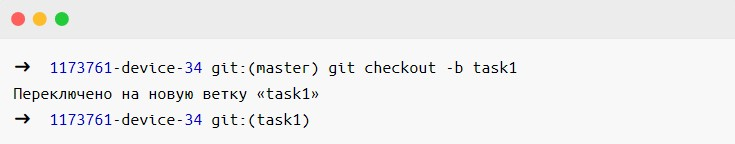

Завдання: форкнути репозиторій у GitHub, створити гілку та працювати з кодом.
Відразу виникає багато запитань:
- що таке GitHub?
- які для цього потрібні команди?
- навіщо, а головне, як усім цим користуватися?
Давайте розберемося.
Коли ми пишемо код, ми постійно туди щось додаємо, видаляємо і іноді все
може ламатися. Тому перед будь-якими змінами варто зробити копію
проекту.
Якщо збирати проекти в папки з іменами проект1, проект1_фіналі
проект2_доробка, ви швидко заплутаєтеся і щось втратите.
Тому для роботи
із кодом використовують системи контролю версій.
- Система контролю версій— програма, яка зберігає різні версії одного документа, дозволяє перемикатися між ними, вносити та відстежувати зміни. Таких систем багато і всі вони працюють за принципом комп'ютерної гри, де можна повернутися до місця збереження, якщо щось пішло не так.
- Git – найпопулярніша система контролю версій. З Git можна працювати через командний рядок (або термінал). У кожній системі своя вбудована програма для роботи з командним рядком. У Windows це PowerShell чи cmd, а Linux чи macOS — Terminal.
Замість вбудованих програм можна використовувати будь-яку іншу – наприклад, Git Bash у Windows або iTerm2 для MacOS.
Встановлюємо та налаштовуємо Git
Windows. Завантажте Git для Windows, запустіть exe-файл, дотримуйтесь інструкцій.
macOS. Скачайте Git для macOS и запустите dmg-файл. Если он не запускается, зайдите в Системные настройки — Безопасность и нажмите кнопку Open anyway (Всё равно открыть).
Linux. Установите Git через встроенный менеджер пакетов. Если у вас Ubuntu, используйте команду sudo apt-get install git. Команды для других дистрибутивов можно посмотреть здесь.
Як перевірити, що Git встановився
Відкрийте термінал та введіть команду

Якщо Git встановлено, ви побачите номер версії, наприклад, 2.35.1.
Налаштовуємо Git
Тепер потрібно ввести ім'я та адресу електронної пошти, щоб ваші дії в Git були підписані, а також для прив'язки до GitHub.
Додати ім'я (введіть його всередині лапок):

Додати електронну пошту (замініть email@example.com на вашу пошту):

Опція --global означає, що ім'я та пошта будуть використовуватися для всіх ваших дій у Git. Якщо ви хочете міняти цю інформацію для різних проектів, то вводьте ці ж команди, тільки без опції --global.
Реєструємось на GitHub
GitHub (або Гітхаб) — веб-сервіс на основі Git, який допомагає спільно розробляти IT-проекти. На Гітхабі розробники публікують свій і редагують чужий код, коментують проекти та слідують за новинами інших користувачів.
Профіль на Гітхабі та всі проекти в ньому — розробник вашого публічного портфоліо, тому потрібно завести профіль, якщо у вас його ще немає.
- Зайдіть на сайт https://github.com і натисніть кнопку Sing up.
- Введіть ім'я користувача (потрібно в подальшій роботі), адресу електронної пошти (таку ж, як при налаштуванні Git) і пароль.
- На пошту придёт код активації — ввести на сайт.
- Появляється вікно з вибором тарифного плану. Якщо ви користуєтеся Гітхабом для навчання, то вкажіть, що профіль потрібен тільки вам і вашому студенту.
- Опитування та вибір інтересів можна пропустити.
На цьому все ви зареєструвалися і у вас є власний профіль.
Встановлюємо SSH-ключі
Щоб отримати доступ до проектів на GitHub зі свого комп'ютера та виконувати команди без постійного введення пароля, потрібно, щоб сервер дізнавався. Для цього використовуються SSH-ключі.
SSH – протокол для безпечного з'єднання між комп'ютерами.
SSH-ключ складається з двох частин – відкритого та закритого ключа. Відкритий ключ ми надсилаємо на сервер. Його можна не ховати від усіх і не переживати, що хтось його вкраде, тому що без закритого ключа він марний. А ось закритий ключ - секретна частина, доступ до нього має бути лише у вас. Це важливо.
Ми будемо підключатися до GitHub SSH. Це працює так:
- Ви надсилаєте якусь інформацію на GitHub, який знає ваш відкритий ключ.
- GitHub по відкритому ключу розуміє, що ви це ви, і відправляє щось у відповідь.
- Тільки ви можете розшифрувати цю відповідь, тому що тільки у вас є відповідний закритий ключ.
Щоб підключитися до GitHub за допомогою SSH-ключа, спочатку потрібно його створити.
Перевіряємо SSH-ключі
Перед створенням нового SSH-ключа перевіримо, чи на комп'ютері є інші ключі. Зазвичай вони лежать у папці з назвою .ssh, тому подивимося, чи є в ній щось, за допомогою команди в терміналі:
Якщо у вас вже є SSH-ключ, то у списку будуть файли з іменами на зразок id_rsa.pub, id_ecdsa.pub або id_ed25519.pub. А якщо термінал лається, що директорії ~/.ssh не існує, отже, у вас немає SSH-ключів. Давайте це виправимо.
Створюємо новий SSH-ключ
Відкрийте термінал та скопіюйте туди цю команду. Не забудьте підставити в лапки пошту, на яку ви реєструвалися на Гітхабі.
ed25519 — це алгоритм для створення ключів. Якщо ваша система не підтримує алгоритм ed25519 (і ви побачили помилку), використовуйте трохи іншу команду з алгоритмом rsa:
Термінал спитає, куди зберегти ключ. Якщо не хочете змінювати ім'я файлу, який пропонує термінал, просто натисніть клавішу Enter.
Тепер потрібно додати пароль, яким буде зашифровано ваш ключ. Це варто зробити, інакше надалі можуть бути проблеми з налаштуванням, та й так просто безпечніше.
В результаті створюється новий SSH-ключ, прив'язаний до електронної пошти.
Створення ключа за кроками:

Додаємо SSH-ключ до ssh-agent
ssh-agent - програма для зберігання та керування SSH-ключами. Давайте запустимо її та додамо туди наш SSH-ключ. Запускаємо командою eval "$(ssh-agent -s)":
Якщо у відповідь термінал покаже напис "Agent pid" і число - значить, все ок, агент запущено.
Тепер додамо наш ключ командою.
Якщо у вашого ключа інше ім'я, замініть назву id_ed25519 на ім'я файлу з ключем (це правило застосовується і далі в інструкції). Якщо ви встановлювали пароль на ключ, введіть його двічі після введення команди ssh-add (термінал підкаже, коли це зробити).
Тепер, якщо все добре, з'явиться напис Identity added — це означає, що можна переходити до додавання ключа на GitHub.
Копіюємо SSH-ключ
Щоб додати ключ на GitHub, потрібно спочатку його скопіювати з файлу командою clip. Ви не побачите ключ на екрані, але він з'явиться в буфері обміну і його можна буде вставити на Гітхаб.
Команда clip може не спрацювати на вашому комп'ютері, тоді є два способи дізнатися ключ – простий та складний.
Складний метод. Знайдіть приховану папку .ssh, відкрийте файл id_ed25519.pub у текстовому редакторі та скопіюйте його вміст.
Простий спосіб. Введіть команду нижче і ключ з'явиться у терміналі — його потрібно вручну скопіювати в буфер обміну. Ключ починається з ssh-ed22519 або ssh-rsa (або схожого рядка), тому копіюйте рядок прямо з самого початку.
Не копіюйте цей ключ із статті – він уже не працює.
Додаємо SSH-ключ на GitHub
Це потрібно зробити, щоб GitHub вас дізнавався.
Перейдіть на сторінку для роботи з ключами у вашому профілі на GitHub та натисніть кнопку New SSH key.
У полі Title потрібно додати назву нового ключа. Наприклад, якщо ви використовуєте Mac, ви можете назвати ключ MacBook Air, або якщо ключ для курсів Академії, то Academy. А ключ, який ви скопіювали на попередньому етапі, вставте в поле Key.
Не копіюйте ключ зі скріншота – він уже не працює.
Тепер натисніть кнопку Add SSH key і, якщо потрібно, введіть свій пароль від GitHub, щоб підтвердити збереження. Якщо все зроблено правильно, новий ключ з'явиться у списку на сторінці https://github.com/settings/keys
Тепер ми можемо попрацювати із проектом у репозиторії.
Що таке репозиторій
Репозиторій – папка з файлами вашого проекту на сервері GitHub. Так ви можете працювати з проектом будь-де, не переживаючи, що якісь файли загубляться — всі дані залишаться в репозиторії.
Якщо над проектом працює кілька програмістів, спочатку створюється майстер-репозиторій – це спільний репозиторій із робочою версією проекту. А кожен програміст працює з форком, тобто повною копією майстер-репозиторія. У форці ви можете безкарно змінювати код і не боятися щось зламати в основній версії проекту.
Робимо форк майстер-репозиторія
Заходимо у потрібний репозиторій та натискаємо на «вилку» з написом fork.
З'явиться вікно Create a new fork - перевірте, що він називається так, як вам потрібно, і натисніть кнопку Create fork. За кілька секунд все готово.
Клонуємо форк на комп'ютер - git clone
Клонувати форк — означає завантажити його, щоб працювати з кодом на своєму комп'ютері. Тут нам і знадобиться SSH.
Відкриваємо термінал і переходимо до папки з майбутнім проектом – для цього використовуємо команду cd your-project. Якщо ви бажаєте, щоб проект лежав у папці device, введіть cd device

Якщо такої папки на комп'ютері немає, спочатку введіть md your-project, щоб створити цю папку, а потім cd your-project. Докладніше про команди.
Коли ви перейдете в папку, введіть команду git clone для клонування репозиторію:
Замініть your-nickname на ваше ім'я користувача на GitHub, а your-project - на назву проекту. Найпростіше їх знайти нагорі сторінки репозиторію.
Якщо ви правильно налаштували SSH-ключі, Git скопіює репозиторій на ваш комп'ютер.
Якщо ви бачите помилку Error: Permission denied (publickey), швидше за все, ви помилилися у налаштуванні SSH-ключа. Поверніться до цього розділу інструкції та повторіть процес налаштування.
До речі, якщо ви хочете, щоб назва папки з проектом у вас на комп'ютері відрізнялася від імені репозиторію, можете доповнити команду клонування, додавши наприкінці іншу назву:
Тепер на вашому комп'ютері в папці your_project або в тій, яку ви назвали, знаходиться повна копія репозиторію c GitHub.
У кожному репозиторії є щонайменше одна основна гілка, яку створює сам Git - вона називається master. Зазвичай у ній зберігаються перевірена версія програми без помилок.
А якщо ви хочете виправити помилку в коді або додати щось до проекту, але не хочете зламати код в основній гілці, потрібно створити нову гілку з master і працювати з неї. Кожна гілка — щось подібне до другорядної дороги, яка потім знову з'єднається з основною.
Створюємо нову гілку git branch
Відкрийте термінал та введіть команду
Вона показує список гілок, з якими ми працюємо у проекті, та виділяє поточну. Якщо ми знаходимося в master, то створюємо нову гілку командою

Якщо поточна гілка не master, перейдіть на неї за допомогою команди checkout. Після git checkout треба вказати назву потрібної гілки.
Ми робимо це, щоб нова гілка містила свіжу робочу версію проекту. Якщо ви помилилися в назві, наприклад, припустилися помилки, ви можете змінити назву гілки за допомогою команди:
Зберігаємо зміни - git add
Після того, як ви створили гілку і попрацювали в ній у себе на комп'ютері, потрібно зберегти результат, щоб з'явився в репозиторії і не зник.
Якщо ви хочете зберегти зміни не у всіх файлах, спочатку введіть команду git status. Вона покаже поточний стан у вашій гілці, а саме список із назвами змінених файлів, якщо вони є, і вкаже на ті, які чекають на запис та збереження (зазвичай вони виділені червоним кольором).
Щоб зберегти всі зміни разом, використовуйте команду
Щоб зберегти зміни лише для окремих файлів, вкажіть їх імена вручну. Наприклад, якщо ви змінили файл index.html, введіть

Якщо назва дуже довга, почніть її писати, натисніть Tab і термінал сам запропонує продовження шляху до файлу.
Робимо комміт - git commit
Зробити комміт — означає зафіксувати всі збережені зміни і дати їм назву. Це робиться за допомогою команди commit
Текст повідомлення має бути лаконічним і водночас повідомляти про те, що робить комміт (внесені зміни). Наприклад,
- Додає ім'я наставника у Readme
- Вводить функцію сортування зображень
- Править помилку у пошуку міст на карті

Відправляємо зміни на GitHub - git push
Збережені зміни поки не помітні колегам, бо перебувають у нашому локальному репозиторії. Потрібно відправити комміти на GitHub. Для цього введіть команду
Де origin означає репозиторій на комп'ютері, тобто ваш форк. Слово origin – частина команди, не змінюйте цю назву на свою.
Створюємо пулреквест
Пулреквест (або PR) - це пропозиція змінити код у репозиторії. PR повинен перевірити адміністратор майстер-репозиторія – це може бути колега-розробник, техлід чи наставник на курсі.
Якщо до коду немає питань, пулреквест приймається. Якщо потрібно щось виправити – відхиляється, і доведеться виправити код і знову пройти ланцюжок git add – git commit – git push. Якщо ви й далі працюєте в тій самій гілці, а пулреквест ще не прийнятий, всі ваші зміни автоматично додадуться до пулреквесту, створеного з цієї гілки після команди git push origin назва-поточної-гілки.
Щоб створити пулреквест, зайдіть на сторінку вашого форка на GitHub. Угорі з'явилася плашка Compare & pull requests, а ще можна зайти на вкладку Pull Requests.
Натисніть на неї і опинитесь на сторінці відкриття пулреквесту. Перевірте опис та натисніть Create pull request.
Готово, тепер чекаємо залишається чекати на схвалення пулреквесту або коментарів до нього.
Синхронізуємо репозиторії
Припустимо, ви виправили код, керівник або наставник схвалив ваші редагування і прийняв пулреквест.
Тепер код у майстер-репозиторії оновився, а у вашій форці немає, адже ви не оновлювали свою версію репозиторію з тих пір, як клонували її собі на комп'ютер. Наведемо форк в життєвий стан.
У локальному репозиторії переключаємося на гілку master.
Забираємо зміни з гілки master майстер-репозиторія
Відправляємо зміни вже зі своєї гілки master у ваш форк на GitHub за допомогою команди
Готово, тепер форк та оригінальний репозиторій перебувають у актуальному стані.
Словник
Система контролю версій — програма, яка зберігає різні версії одного документа, дозволяє перемикатися між ними, вносити та відстежувати зміни.
Git – найпопулярніша система контролю версій. З Git можна працювати через термінал.
Як працює термінал: ми вводимо команду і отримуємо відповідь комп'ютера — або все вийшло, або помилка, або потрібно ввести щось ще.
GitHub (або Гітхаб) — веб-сервіс, що базується на Git, який допомагає спільно розробляти IT-проекти. На Гітхабі розробники публікують свій та редагують чужий код, коментують проекти та стежать за новинами інших користувачів.
SSH-ключ потрібен, щоб отримати доступ до проектів на GitHub зі свого комп'ютера та виконувати команди без постійного введення пароля, потрібно, щоб сервер нас дізнавався.
ssh-agent - програма для зберігання та керування SSH-ключами.
Репозиторій — це папка з файлами вашого проекту на сервері GitHub або у вас на комп'ютері.
Майстер-репозиторій – це загальний для всієї команди репозиторій із робочою версією проекту.
Форк - повна копія майстер-репозиторія, в якій ви можете безпечно працювати.
Клонувати форк – завантажити його командою git clone, щоб працювати з кодом на своєму комп'ютері.
Пулреквест (або PR) - пропозиція змінити код у репозиторії. PR повинен перевірити адміністратор майстер-репозиторія – це може бути колега-розробник, техлід чи наставник на курсі.